In numbers
숫자로 보는 다원
91건사업실적
2019년부터
3건진행 중인 사업
지금 수행하고 있는 용역
5곳자문·심의 위원회
한국도로공사, 경기도, 대전시 등
60건공공디자인 실적
가장 많이 수행한 분야
매출액, 신용평가등급도 자료를 주시면 같은 방식으로 넣을 수 있습니다. 자료 필요
Business
사업분야 자세히
사업분야
Projects
전체 실적 보기
최근 수행 실적
News
소식 전체 보기
최근 소식
- 공지다원 도시디자인 홈페이지를 새로 열었습니다.2026.11.02